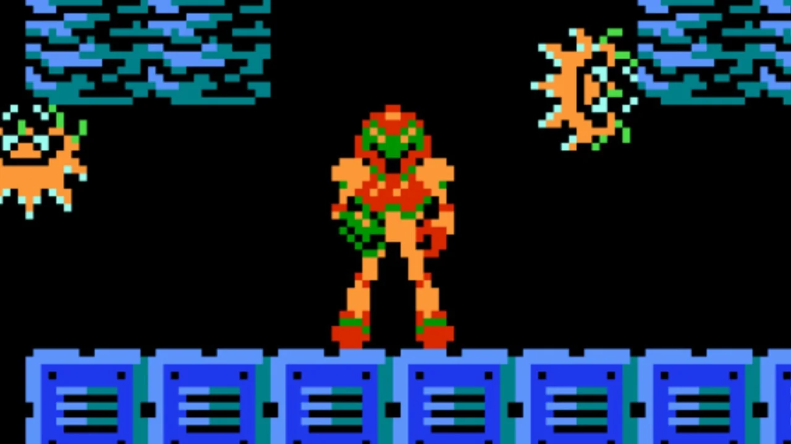

Portal Metroid
Link: Portal Metroid
For this project, I worked with a teammate to replicate the first level of Metroid NES. I implemented the player movement and projectile mechanics, three of the main enemy types, as well as game audio and door functionality. We also added a custom level and mechanic with portals. For that level I implemented the portal shooting mechanic and worked on the portal collision system.
The game was developed using Unity and C# as well as original Metroid NES audio from Metroid Sounds and Metroid Music.